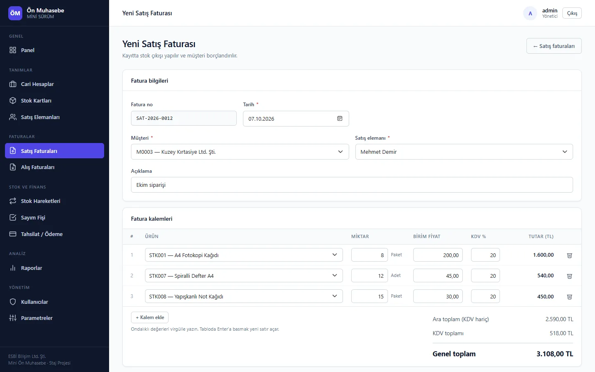
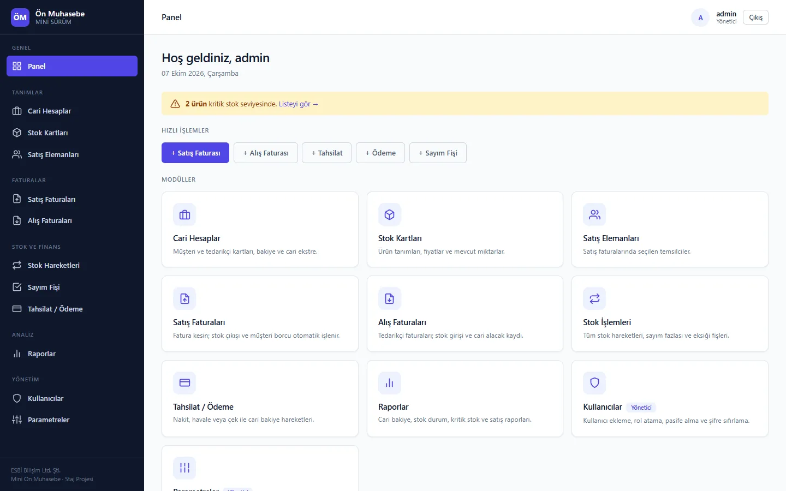
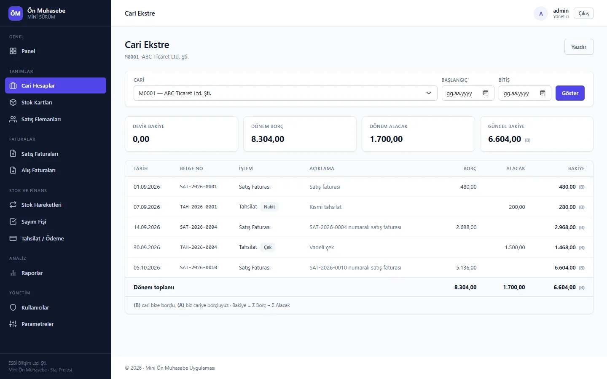
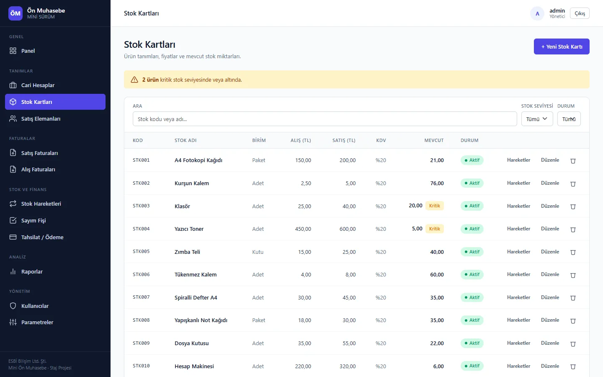
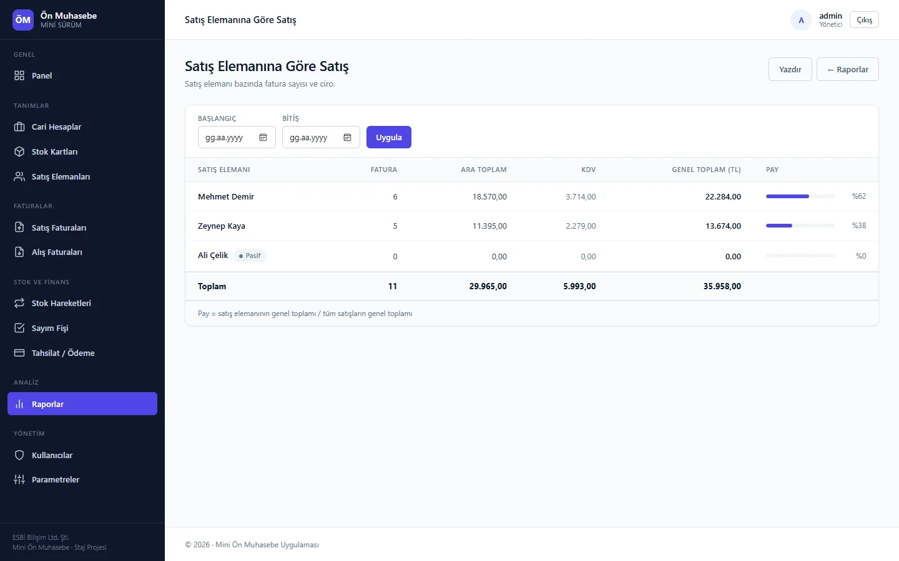
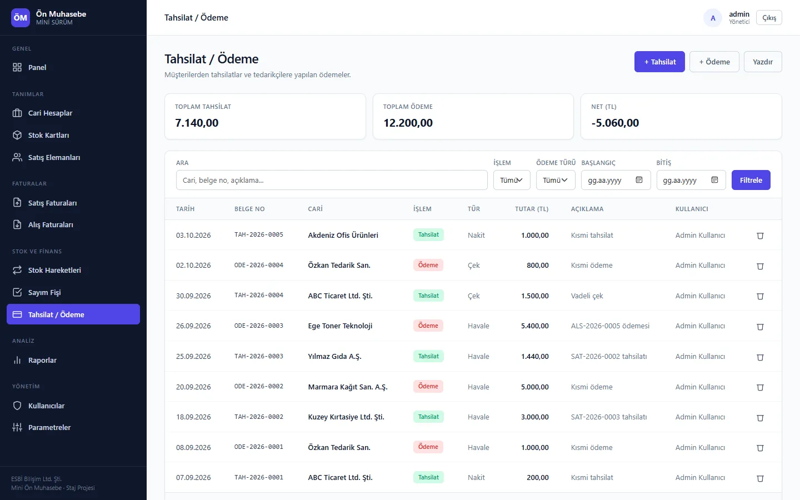
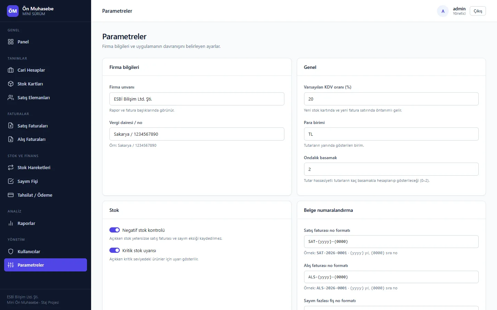

Customer & supplier accounts
Customers, suppliers or both. Balances aren't stored; they're calculated from account movements, and the statement shows the opening balance, period totals and a running balance for any date range.
Internship project · ESBİ
A web-based bookkeeping app for small businesses: customer and supplier accounts, inventory, sales and purchase invoices, collections and payments, stock counts and reports. I built it end to end during my internship at ESBİ, following a requirements document and its five-week plan.
No live demo: the app needs a .NET server and SQL Server, so the screenshots below come from a local run with sample data.

Every module in the requirements document, each one checked against the database.
Customers, suppliers or both. Balances aren't stored; they're calculated from account movements, and the statement shows the opening balance, period totals and a running balance for any date range.
Stock cards with purchase and sales prices, VAT rate and a critical level. Quantities come from stock movements; items at or below the critical level are flagged on the list and the dashboard.
A header plus line items with VAT per line; totals update as you type. Saving writes the invoice, its stock movements and the account entry together, and deleting the invoice reverses all of them.
Every stock movement in one filterable list. Count surplus and shortage slips change stock only and never touch an account, as the spec requires.
Cash, bank transfer or cheque. A collection credits the account, a payment debits it, and each gets its own document number.
Account balances, stock status, critical stock and sales by salesperson, plus invoice and movement lists. Reports are printable and match the movement records.
Company details, default VAT, currency, decimal places (0–2), negative-stock control, critical-stock warnings and document number formats such as SAT-{yyyy}-{0000}.
Admin and standard roles; only admins manage users and parameters. The session is checked on every request, so deactivating a user or changing a role takes effect immediately.
Captured from the running app with sample data. The interface is in Turkish; click to enlarge.






An MVC app on Clean Architecture: the rules sit in the inner layers, while the database and the web stay at the edges.
Each layer is its own project, and dependencies only point inward. Application reaches the database through an interface that Infrastructure implements, controllers never see the DbContext, and architecture tests keep it that way.
Unit tests cover the pure rules, password hashing, login lockout and the layer rules. Integration tests run the whole app in memory against a real SQL Server, on a fresh database each time. GitHub Actions also checks formatting and that the migrations match the model.
Stock quantities and account balances are derived from the movement tables. The formula is defined once as an expression and reused inside queries, so the sum runs in SQL instead of loading every movement into memory.
.Select(s => new StokBakiyesi {
Stok = s,
Mevcut = s.StokHareketleri.AsQueryable().Sum(Etki)
})An invoice, its stock movements and its account entry are saved with a single SaveChanges call, so either all of them are written or none. When an invoice is deleted, its movements are found by document number and type and removed the same way.
Links from accounts, stock cards, salespeople and users to documents are Restrict, not Cascade. With negative-stock control on, deleting a purchase invoice that would push stock below zero is blocked, and the app names the item.
Amounts are typed with a decimal comma. The request culture is pinned to tr-TR, so 12,50 can't turn into 1250 on an English server, and rounding follows the decimal-places parameter, half away from zero.
Forms bind to DTOs instead of entities, and the record ID is read from the URL only. A field added to the form can't change another record or a server-calculated total; an integration test tries exactly that.
Custom cookie authentication on the project's own user table, hardened after a security review.
PBKDF2-SHA256 with a 16-byte random salt and 600,000 iterations. Hashes are compared in constant time.
By default, at most 10 login attempts per minute from one IP, and five wrong passwords lock the account for five minutes. The limits are read from appsettings.json and checked at startup; logins and lockouts are logged with user name and IP.
A nonce-based Content Security Policy, X-Frame-Options, nosniff and a strict referrer policy. Every POST checks an anti-forgery token, and third-party scripts are served from the app itself.
Each request re-reads the signed-in user, so deleted, deactivated or changed users are signed out. Admins can't remove themselves or the last active admin.
Six of the twelve issues documented in the README, and how each was solved.
With nullable reference types on, MVC treated non-nullable properties as required, including the invoice number and navigation properties that never come from the form. ModelState was always invalid, with no visible error.
Fix: server-filled fields were removed from validation, and a test confirmed that bad input such as an empty customer was still rejected. Moving the forms to DTOs later made this workaround unnecessary.
Quantities and balances come from movements, but the queries didn't load them, so every sum was 0 and the edit screen showed a false critical-stock warning.
Fix: loading the movements fixed the numbers; later the lists were rewritten to sum in SQL so they don't pull every movement into memory.
The stock and balance formulas were written by hand in six views each. Changing the critical-stock rule meant finding all of them, and missing one made two screens disagree.
Fix: the formulas moved into services behind interfaces, and views now get ready values through ViewModels, so the compiler keeps business logic out of the views.
ASP.NET Core Identity adds seven tables and its own user class, while the spec asked for an 11-table schema with its own user table.
Fix: Identity was removed in favour of cookie authentication on the existing table and a PBKDF2 password helper; the seed data hashes were regenerated with it.
Model binding reads 12,50 using the server's culture. It worked on a Turkish machine, but an English server would have saved 1250.
Fix: the app culture is pinned to tr-TR, and the English model binding messages were replaced with Turkish ones.
A deactivated user couldn't sign in again, but a session that was already open kept its old rights for up to eight hours.
Fix: the cookie is validated against the database on every request, and removing yourself or the last active admin is blocked.
The order of work set by the requirements document.
You need the .NET 10 SDK and SQL Server. Run these from the repository root.
The UTF-8 code page flag keeps Turkish characters intact.
sqlcmd -S "localhost\MSSQLSERVER01" -E -f i:65001 -i database/create_database.sqlsqlcmd -S "localhost\MSSQLSERVER01" -E -f i:65001 -i database/seed_data.sqlIt opens at http://localhost:5029.
dotnet run --project src/OnMuhasebe.WebUnit tests need nothing else. Integration tests run when ONMUHASEBE_TEST_SQL points at a SQL Server; each run creates its own database and drops it afterwards.
$env:ONMUHASEBE_TEST_SQL = "Server=localhost\MSSQLSERVER01;Trusted_Connection=True;TrustServerCertificate=True"
dotnet testThe commands use the localhost\MSSQLSERVER01 instance. If yours is localhost or .\SQLEXPRESS, change the server name in the commands and in DefaultConnection inside src/OnMuhasebe.Web/appsettings.json.
admin (admin) and ayse.yilmaz (standard), both with the password 123456. They exist for testing only and must not be loaded on a live server.
TAH-{yyyy}-{0000} / ODE-{yyyy}-{0000} format.